aidmi benchmark report — 2026-07-06-yq3v
Summary
Run totals with mean / median / sd for the headline metrics — overall, split by the two dominant levers (self-correction, context mode), then per strategy and per fixture with self-correction on.
| Group | n | Recall | Field acc | Mat% (any) | Mat% (all) | Cost $ | Time (s) |
|---|---|---|---|---|---|---|---|
| All runs | 288 | 0.768 / 1.000 ±0.356 | 0.686 / 0.676 ±0.080 | 85.4% | 58.3% | $0.1569 / 0.1325 ±0.1147 | 149 / 107 ±123 |
| Group | n | Recall | Field acc | Mat% (any) | Mat% (all) | Cost $ | Time (s) |
|---|---|---|---|---|---|---|---|
| on | 168 | 0.878 / 1.000 ±0.274 | 0.679 / 0.673 ±0.074 | 92.3% | 75.6% | $0.1745 / 0.1508 ±0.1204 | 191 / 160 ±134 |
| off | 120 | 0.615 / 0.761 ±0.398 | 0.696 / 0.692 ±0.089 | 75.8% | 34.2% | $0.1323 / 0.0817 ±0.1012 | 89 / 65 ±72 |
| Group | n | Recall | Field acc | Mat% (any) | Mat% (all) | Cost $ | Time (s) |
|---|---|---|---|---|---|---|---|
| live_query_tool | 144 | 0.774 / 1.000 ±0.345 | 0.697 / 0.717 ±0.079 | 86.1% | 57.6% | $0.1661 / 0.1270 ±0.1213 | 162 / 111 ±139 |
| metadata_only | 144 | 0.762 / 1.000 ±0.366 | 0.673 / 0.661 ±0.080 | 84.7% | 59.0% | $0.1478 / 0.1325 ±0.1069 | 136 / 107 ±102 |
| Group | n | Recall | Field acc | Mat% (any) | Mat% (all) | Cost $ | Time (s) |
|---|---|---|---|---|---|---|---|
| ensemble_vote | 24 | 0.971 / 1.000 ±0.076 | 0.689 / 0.694 ±0.077 | 100.0% | 87.5% | $0.3279 / 0.3074 ±0.0842 | 160 / 125 ±107 |
| plan_then_execute | 24 | 0.966 / 1.000 ±0.093 | 0.669 / 0.666 ±0.067 | 100.0% | 87.5% | $0.1381 / 0.1451 ±0.0643 | 172 / 179 ±93 |
| write_then_critique | 24 | 0.894 / 1.000 ±0.219 | 0.687 / 0.704 ±0.068 | 95.8% | 75.0% | $0.2332 / 0.2155 ±0.0637 | 252 / 227 ±106 |
| plan_write_critique | 24 | 0.870 / 1.000 ±0.224 | 0.669 / 0.672 ±0.064 | 95.8% | 62.5% | $0.2656 / 0.2226 ±0.1241 | 333 / 306 ±165 |
| structured_per_table | 24 | 0.861 / 1.000 ±0.230 | 0.694 / 0.675 ±0.070 | 95.8% | 58.3% | $0.1339 / 0.1323 ±0.0662 | 182 / 155 ±139 |
| write_tools_freeform | 24 | 0.833 / 1.000 ±0.373 | 0.688 / 0.674 ±0.085 | 83.3% | 83.3% | $0.0555 / 0.0496 ±0.0246 | 108 / 78 ±71 |
| write_tools_freeform_inlinedbt | 24 | 0.750 / 1.000 ±0.433 | 0.656 / 0.646 ±0.079 | 75.0% | 75.0% | $0.0675 / 0.0467 ±0.0436 | 130 / 106 ±80 |
| Group | n | Recall | Field acc | Mat% (any) | Mat% (all) | Cost $ | Time (s) |
|---|---|---|---|---|---|---|---|
| missing_relations_v2 | 42 | 0.912 / 1.000 ±0.261 | 0.589 / 0.592 ±0.019 | 92.9% | 85.7% | $0.1660 / 0.1579 ±0.1123 | 177 / 129 ±145 |
| wrong_field_names_v2 | 42 | 0.900 / 1.000 ±0.293 | 0.776 / 0.796 ±0.030 | 90.5% | 88.1% | $0.1416 / 0.1138 ±0.0996 | 162 / 112 ±134 |
| messy_data_v2 | 42 | 0.875 / 1.000 ±0.237 | 0.679 / 0.670 ±0.043 | 95.2% | 69.0% | $0.1787 / 0.1502 ±0.1141 | 206 / 166 ±138 |
| master_v2 | 42 | 0.825 / 1.000 ±0.293 | 0.676 / 0.674 ±0.035 | 90.5% | 59.5% | $0.2118 / 0.1839 ±0.1410 | 219 / 193 ±107 |
Headline
Cost vs recall across every strategy config — the frontier shows which strategies dominate.
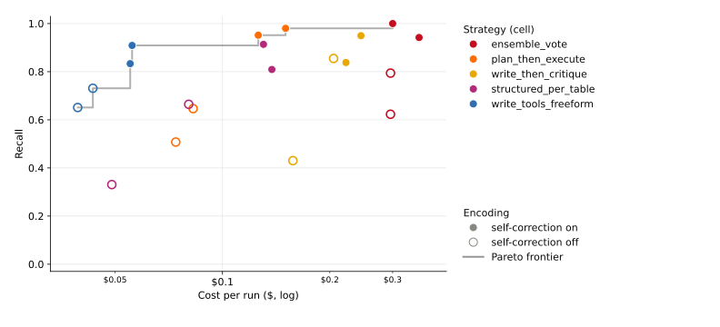
| Objective | Cell | Context | Self-correct | Model | Value |
|---|---|---|---|---|---|
| Highest mean recall | ensemble_vote | metadata_only | on | gemini25flash | 1.000 |
| Lowest mean cost | write_tools_freeform | metadata_only | off | gemini25flash | $0.0393 |
| Highest materialization pass-rate | write_then_critique | live_query_tool | on | gemini25flash | 100.0% |
Metric choice
Precision saturates near 1.0, so recall and materialization — not f1 — are the discriminating quality axes. The table reports recall and f1 both ways: evaluated-only means silently drop runs that produced nothing, so they overstate quality; the 'incl. failed' columns count those runs as 0.
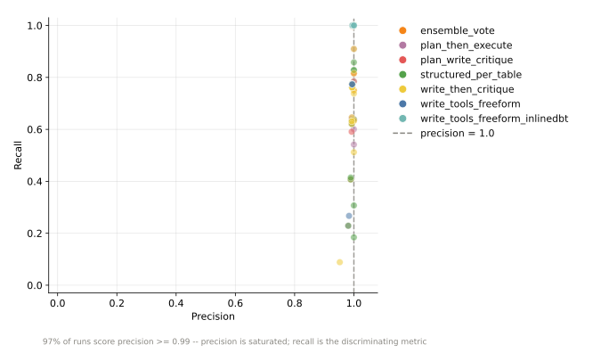
| Strategy | Runs | Failed (nothing produced) | Recall incl. failed | Recall evaluated | f1 incl. failed | f1 evaluated |
|---|---|---|---|---|---|---|
| plan_write_critique | 24 | 1 | 0.870 | 0.870 | 0.906 | 0.945 |
| ensemble_vote | 48 | 4 | 0.840 | 0.840 | 0.870 | 0.949 |
| write_then_critique | 48 | 5 | 0.768 | 0.768 | 0.813 | 0.908 |
| plan_then_execute | 48 | 7 | 0.771 | 0.771 | 0.800 | 0.937 |
| write_tools_freeform | 48 | 11 | 0.741 | 0.774 | 0.750 | 0.973 |
| write_tools_freeform_inlinedbt | 24 | 6 | 0.750 | 0.818 | 0.749 | 0.999 |
| structured_per_table | 48 | 8 | 0.680 | 0.680 | 0.729 | 0.875 |
Distribution
Scores are bimodal — runs pile at 0 and 1, not the mean. The box + raw dots expose the spread a mean bar hides.
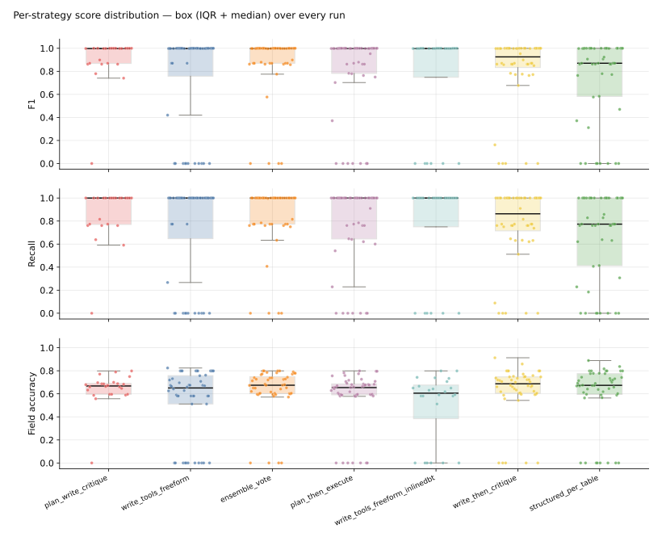
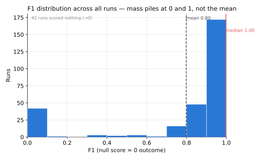
Levers
Self-correction is the dominant lever; live_query_tool spends ~2.5× the input tokens of metadata_only for a fraction of a point of f1.


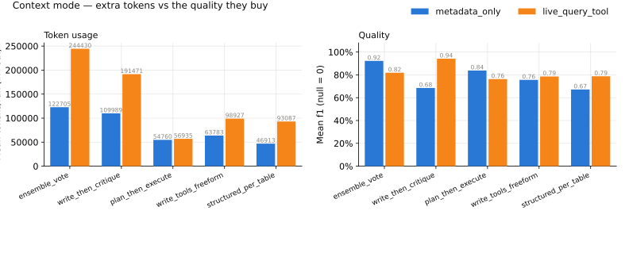
Strategy
Per-strategy materialization, recall, field accuracy, and their cost/latency trade-offs.
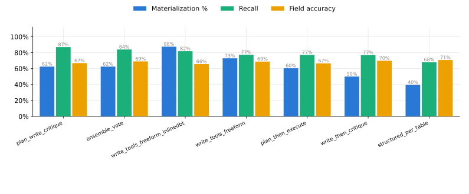
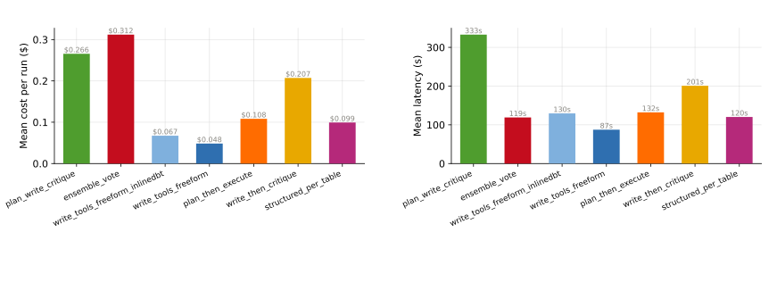
Efficiency
Resource per unit of quality (cost/f1, tokens/f1), the reasoning-token tax, and the retry/cache drivers behind cost.
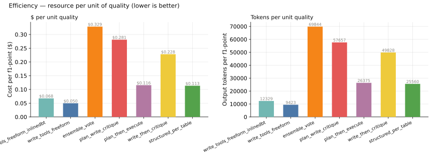

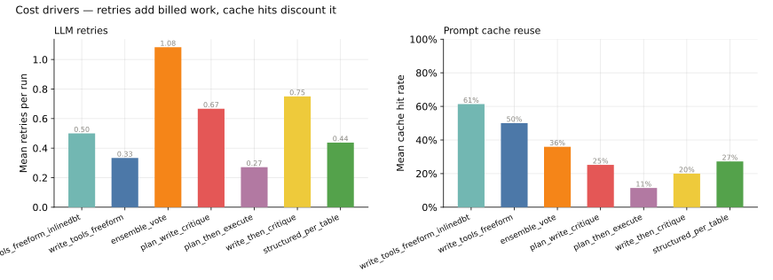
Reliability
Many configs are non-unanimous across identical reps; silent failures produce nothing despite reporting complete.
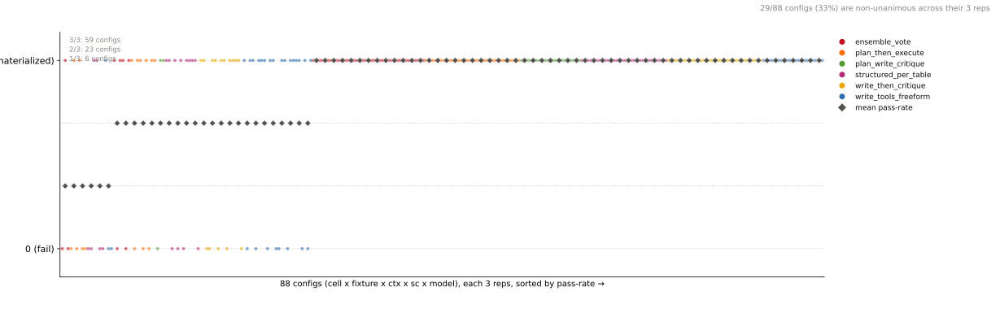
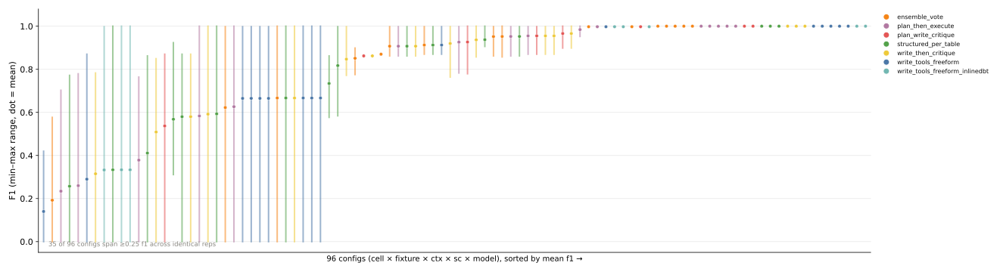
| Campaign | Model | Cell | Fixture | Rep |
|---|---|---|---|---|
| 2026-07-06-yq3v | gemini25flash | ensemble_vote | master_v2 | 0 |
| 2026-07-06-yq3v | gemini25flash | ensemble_vote | master_v2 | 2 |
| 2026-07-06-yq3v | gemini25flash | ensemble_vote | messy_data_v2 | 1 |
| 2026-07-06-yq3v | gemini25flash | ensemble_vote | wrong_field_names_v2 | 1 |
| 2026-07-06-yq3v | gemini25flash | plan_then_execute | master_v2 | 1 |
| 2026-07-06-yq3v | gemini25flash | plan_then_execute | messy_data_v2 | 0 |
| 2026-07-06-yq3v | gemini25flash | plan_then_execute | messy_data_v2 | 1 |
| 2026-07-06-yq3v | gemini25flash | plan_then_execute | messy_data_v2 | 2 |
| 2026-07-06-yq3v | gemini25flash | plan_then_execute | messy_data_v2 | 2 |
| 2026-07-06-yq3v | gemini25flash | plan_then_execute | wrong_field_names_v2 | 0 |
| 2026-07-06-yq3v | gemini25flash | plan_then_execute | wrong_field_names_v2 | 1 |
| 2026-07-06-yq3v | gemini25flash | structured_per_table | master_v2 | 2 |
| 2026-07-06-yq3v | gemini25flash | structured_per_table | messy_data_v2 | 0 |
| 2026-07-06-yq3v | gemini25flash | structured_per_table | messy_data_v2 | 1 |
| 2026-07-06-yq3v | gemini25flash | structured_per_table | messy_data_v2 | 1 |
| 2026-07-06-yq3v | gemini25flash | structured_per_table | missing_relations_v2 | 0 |
| 2026-07-06-yq3v | gemini25flash | structured_per_table | missing_relations_v2 | 1 |
| 2026-07-06-yq3v | gemini25flash | structured_per_table | missing_relations_v2 | 2 |
| 2026-07-06-yq3v | gemini25flash | write_then_critique | master_v2 | 2 |
| 2026-07-06-yq3v | gemini25flash | write_then_critique | messy_data_v2 | 0 |
| 2026-07-06-yq3v | gemini25flash | write_then_critique | wrong_field_names_v2 | 2 |
| 2026-07-06-yq3v | gemini25flash | write_tools_freeform | master_v2 | 1 |
| 2026-07-06-yq3v | gemini25flash | write_tools_freeform | master_v2 | 1 |
| 2026-07-06-yq3v | gemini25flash | write_tools_freeform | master_v2 | 2 |
| 2026-07-06-yq3v | gemini25flash | write_tools_freeform | messy_data_v2 | 0 |
| 2026-07-06-yq3v | gemini25flash | write_tools_freeform | messy_data_v2 | 1 |
| 2026-07-06-yq3v | gemini25flash | write_tools_freeform | messy_data_v2 | 2 |
| 2026-07-06-yq3v | gemini25flash | write_tools_freeform | missing_relations_v2 | 0 |
| 2026-07-06-yq3v | gemini25flash | write_tools_freeform | wrong_field_names_v2 | 1 |
| 2026-07-06-yq3v | gemini25flash | write_tools_freeform_inlinedbt | master_v2 | 1 |
| 2026-07-06-yq3v | gemini25flash | write_tools_freeform_inlinedbt | wrong_field_names_v2 | 0 |
| 2026-07-06-yq3v | gemini25flash | write_tools_freeform_inlinedbt | wrong_field_names_v2 | 1 |
Fixtures
Materialization and field accuracy decouple across fixtures; the std heatmap flags cells whose mean you shouldn't trust.
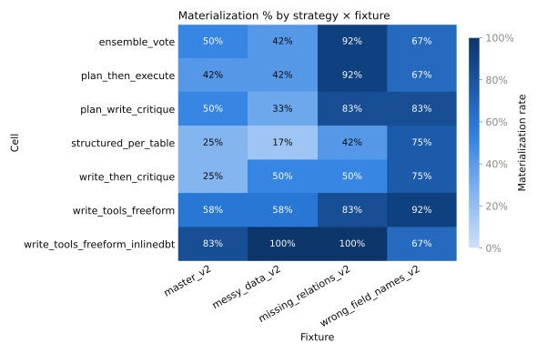
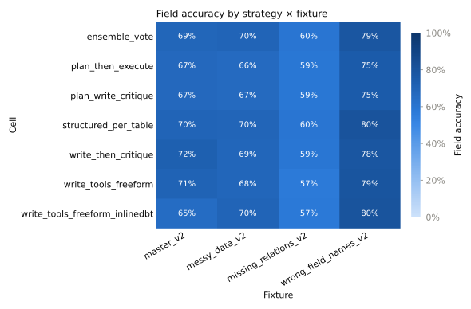
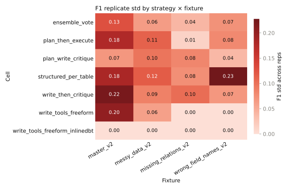
Appendix
Full per-config table with coverage columns (tables declared, columns covered).
| Model | Cell | Context | Self-correct | Recall (mean±sd) | Materialization% | Field acc (mean±sd) | Cost $ | Secs | Tables declared | Cols covered |
|---|---|---|---|---|---|---|---|---|---|---|
| gemini25flash | ensemble_vote | live_query_tool | off | 0.623±0.394 | 75.0% | 0.709±0.078 | $0.2958 | 76.8 | 5.00 | 0.655 |
| gemini25flash | ensemble_vote | live_query_tool | on | 0.942±0.100 | 100.0% | 0.712±0.070 | $0.3558 | 207.0 | 5.00 | 0.952 |
| gemini25flash | ensemble_vote | metadata_only | off | 0.794±0.270 | 91.7% | 0.676±0.067 | $0.2959 | 80.8 | 5.00 | 0.819 |
| gemini25flash | ensemble_vote | metadata_only | on | 1.000±0.000 | 100.0% | 0.666±0.077 | $0.3000 | 112.0 | 5.00 | 1.000 |
| gemini25flash | plan_then_execute | live_query_tool | off | 0.508±0.420 | 66.7% | 0.670±0.074 | $0.0740 | 79.8 | 5.00 | 0.537 |
| gemini25flash | plan_then_execute | live_query_tool | on | 0.952±0.111 | 100.0% | 0.673±0.058 | $0.1260 | 159.0 | 5.00 | 0.969 |
| gemini25flash | plan_then_execute | metadata_only | off | 0.646±0.396 | 75.0% | 0.652±0.057 | $0.0827 | 104.9 | 5.00 | 0.633 |
| gemini25flash | plan_then_execute | metadata_only | on | 0.980±0.066 | 100.0% | 0.666±0.075 | $0.1503 | 184.9 | 5.00 | 0.984 |
| gemini25flash | plan_write_critique | live_query_tool | on | 0.758±0.267 | 91.7% | 0.679±0.077 | $0.3055 | 410.4 | 5.00 | 0.784 |
| gemini25flash | plan_write_critique | metadata_only | on | 0.981±0.063 | 100.0% | 0.659±0.047 | $0.2258 | 255.4 | 5.00 | 0.984 |
| gemini25flash | structured_per_table | live_query_tool | off | 0.665±0.346 | 83.3% | 0.720±0.080 | $0.0804 | 90.1 | 5.00 | 0.709 |
| gemini25flash | structured_per_table | live_query_tool | on | 0.809±0.299 | 91.7% | 0.719±0.072 | $0.1375 | 193.2 | 5.00 | 0.838 |
| gemini25flash | structured_per_table | metadata_only | off | 0.331±0.363 | 58.3% | 0.735±0.107 | $0.0490 | 26.3 | 5.00 | 0.360 |
| gemini25flash | structured_per_table | metadata_only | on | 0.914±0.104 | 100.0% | 0.671±0.058 | $0.1303 | 171.5 | 5.00 | 0.914 |
| gemini25flash | write_then_critique | live_query_tool | off | 0.855±0.141 | 100.0% | 0.709±0.072 | $0.2049 | 178.5 | 5.00 | 0.852 |
| gemini25flash | write_then_critique | live_query_tool | on | 0.950±0.117 | 100.0% | 0.699±0.070 | $0.2445 | 250.1 | 5.00 | 0.953 |
| gemini25flash | write_then_critique | metadata_only | off | 0.430±0.366 | 66.7% | 0.715±0.119 | $0.1576 | 121.1 | 5.00 | 0.474 |
| gemini25flash | write_then_critique | metadata_only | on | 0.838±0.275 | 91.7% | 0.673±0.062 | $0.2219 | 253.7 | 5.00 | 0.852 |
| gemini25flash | write_tools_freeform | live_query_tool | off | 0.731±0.427 | 75.0% | 0.698±0.104 | $0.0433 | 74.6 | 5.00 | 0.734 |
| gemini25flash | write_tools_freeform | live_query_tool | on | 0.909±0.287 | 83.3% | 0.696±0.088 | $0.0558 | 98.6 | 4.58 | 0.909 |
| gemini25flash | write_tools_freeform | metadata_only | off | 0.619±0.431 | 66.7% | 0.676±0.096 | $0.0393 | 58.7 | 4.58 | 0.673 |
| gemini25flash | write_tools_freeform | metadata_only | on | 0.833±0.373 | 83.3% | 0.681±0.082 | $0.0551 | 118.0 | 5.00 | 0.833 |
| gemini25flash | write_tools_freeform_inlinedbt | live_query_tool | on | 0.800±0.400 | 66.7% | 0.675±0.082 | $0.0691 | 120.2 | 4.17 | 0.800 |
| gemini25flash | write_tools_freeform_inlinedbt | metadata_only | on | 0.833±0.373 | 83.3% | 0.642±0.073 | $0.0659 | 139.0 | 5.00 | 0.833 |